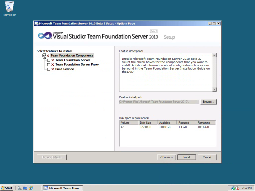

Shows - 10-4
Shows - 10-4
10-4 is a weekly video podcast which gives you a look at what's coming in Visual Studio 2010 and the .NET Framework 4.0. Over and out!!
10-4 Episode 41: Downloading and Installing the Visual Studio 2010 Release Candidate [0:09:59] [2010/02/18]In this episode of 10-4, Brian Keller takes us through downloading and installing the Visual Studio 2010 Ultimate and Visual Studio Team Foundation Server 2010 Release Candidate. This
…
10-4 Episode 40: The New WCF Routing Service [0:09:31] [2010/02/11]People often ask me, "What's new in WCF 4?" Today on 10-4 we are going to look at one of the exciting new capabilities of WCF in .NET 4, the WCF Routing Service. As you will see in this…
10-4 Episode 39: CLR 4 Security and Sandboxing [0:10:56] [2010/01/20]
In this episode of 10-4, Jason Olson takes a quick dive into CLR 4. Specifically, we dive into security improvements in CLR 4, especially around the concept of the sandboxing of a host
and…
10-4 Episode 38: What's New with WCF4 - Simplified Config [0:10:29] [2010/01/19]One of the best new things about WCF in .NET 4 is what is what you won't see when you open your web.config file. We made it easier and simpler to get your service up and running. In this episode…
10-4 Episode 37: Leveraging Model Metadata and Validation with ASP.NET MVC2 [0:21:20] [2010/01/08] In this episode of 10-4, we discuss a new feature coming in the next release of ASP.NET MVC: model metadata and validation. This allows you to associate validation rules and metadata with your model…
10-4 Episode 36: Windows Server AppFabric and Workflow Services Lab [0:29:17] [2009/11/24]
Have you heard about the new Windows Server AppFabric? In this episode we take you through the new Beta 2 version of the Introduction to Workflow Services Hands On Lab in .NET 4 which now includes a…
10-4 Episode 35: PreEmptive Solutions Runtime Intelligence [0:20:08] [2009/11/05]
In this episode of 10-4, Drew Robbins
is joined by Gabriel Torok and Sebastian Holst to take a look at the new Runtime Intelligence features that are in the Dotfuscator edition included in the…
10-4 Episode 34: Debugger Enhancements and Improvements [0:26:11] [2009/10/29]
In this episode of 10-4, Jason Olson is joined by Andrew Hall and Brad Sullivan to take a look at some new enhancements and improvements made to the debugger and debugging experience in
Visual…
10-4 Episode 33: Downloading and Installing Visual Studio 2010 Beta 2 [0:19:43] [2009/10/19]Visual Studio 2010 Beta 2 is here! In this episode of 10-4, Brian Keller takes us through downloading and installing Visual Studio 2010 Ultimate Beta 2 and Visual Studio 2010 Team Foundation
Server…
10-4 Episode 32: MEF Preview 7 [0:29:08] [2009/09/10]
In this episode of 10-4, we revisit the Managed Extensibility Framework and take a look at all the new improvements made in the latest available release, Preview 7.
For more information on the…
10-4 Episode 31: AdventureWorks Bikes Front End to Back End [0:19:03] [2009/08/27]In July Jonathan and Ron paired up to build out a web application for AdventureWorks Bikes. In this episode we will see how you can
Create a model driven ADO.NET Data service Use the new ASP.NET…
10-4 Episode 30: Database Schema Extensibility [0:12:58] [2009/08/13]Visual Studio Team System 2005 saw the introduction of the
Team Edition for Database Professionals product, which allows database developers to perform such functions as version control, unit…
10-4 episode 29: Workflow Web Services [0:25:17] [2009/07/30]Windows Workflow Foundation in .NET 4 makes it easy to build and consume web services. In this episode I'll take you through the Introduction to Workflow Services lab from the
Visual Studio 2010…
10-4 Episode 28: An Introduction to the Historical Debugger [0:11:20] [2009/07/23]The new Historical Debugger coming in Visual Studio Team System 2010 promises to revolutionize the way you debug managed applications. You can think of it as something of a VCR for your debugger;…
10-4 Episode 27: Server-Driven Paging with ADO.NET Data Services [0:12:27] [2009/07/16]
In this episode of 10-4, we discuss a new feature coming in the next release of ADO.NET Data Services: server-driven paging. This allows you to constrain the size of result sets that can be…
10-4 Episode 26: Creating Extensible Applications with the Managed Extensibility Framework [0:24:21] [2009/07/14]
In this episode of 10-4, we take a look at a new library in .NET Framework 4 and how it helps developers write applications that are more extensible and easier to maintain than before.
For more…
10-4 Episode 25: Fixing PIA Pains with Type Equivalence [0:11:35] [2009/06/27]
In this episode of 10-4, we take a look at a new feature in CLR4 called "Type Equivalence" and how it helps address the pain points normally associated with Primary Interop Assemblies and…
10-4 Episode 24: Monitoring Workflow Services [0:10:22] [2009/06/21]One of the great advantages to building services with WCF and Windows Workflow 4 is that the environment is instrumented with loads of events that allow you to track what exactly is happening. This…
10-4 Episode 23: An Introduction to Manual Testing [0:24:51] [2009/06/12]Despite all of the advances in automated testing tools and frameworks over the last decade, manual testing still constitutes the lion's share of testing effort within most software development…
10-4 Episode 22: Simplifying Data-Driven Web Applications [0:20:51] [2009/06/07]
In this episode of 10-4, we discuss how the development of data-driven web applications has evolved in ASP.NET and how in the .NET Framework 4 it becomes even easier. Whether you're working on a new…
10-4 Episode 21: Web Tooling Improvements [0:15:27] [2009/05/30]In this episode of 10-4, Drew Robbins covers some of the new web tooling features in Visual Studio 2010. There is new Code Snippet support for both HTML and JavaScript. In addition, Visual Studio…
10-4 Episode 20: Downloading and Installing Visual Studio 2010 Beta 1 [0:22:44] [2009/05/21]Update: Beta 2 is here! Check out
10-4 Episode 33: Downloading and Installing Visual Studio 2010 Beta 2.
Visual Studio 2010 Beta 1 is here! In this episode of 10-4, Brian Keller takes us through…
10-4 episode 19: Service Discovery with WCF [0:24:01] [2009/05/14]WCF in .NET 4 includes an implementation of the WS-Discovery protocol. Sounds exciting right? Actually it is very cool because it allows you to build applications and services that can discover…
10-4 Episode 18: Functional UI Testing [0:17:29] [2009/05/06]In this episode of 10-4 we look at a new type of test coming in Visual Studio Team System 2010 known as the coded UI test. Coded UI tests can be created to automatically navigate through your…
10-4 Episode 17: F# Intro [0:17:21] [2009/05/01]
In this episode of 10-4, we take a quick look at F#, a new addition to the family of managed programming languages in Visual Studio 2010. F# is a multi-paradigm programming language. Though its…
10-4 Episode 16: Windows Workflow 4 [0:23:39] [2009/04/16]In this episode of 10-4 we build a "Hello Workflow 4" application. You might have heard that .NET 4 includes an all new Workflow engine - learn how you can not only use Workflow but also do…
10-4 Episode 15: Model-First Development with the Entity Framework 4.0 [0:19:15] [2009/04/09]
In this episode of 10-4, we introduce a new tooling enhancement coming with Visual Studio 2010 and the Entity Framework 4.0: model-first development. This feature allows you to create your Entity…
10-4 Episode 14: Sentient DSLs [0:13:45] [2009/04/01]
In this episode of 10-4, we introduce a new feature coming along with Visual Studio 2010 and the .NET Framework 4.0: sentient DSLs. If you've become intrigued with all the hype around leveraging…
10-4 Episode 13: No More Late Surprises [0:11:07] [2009/03/26]One of the core capabilities of Team Foundation Server is that of reporting - being able to correlate your source control with work items (bugs, requirements, etc.), builds, and people in a meaningful…
10-4 Episode 12: Simplifying Your Code With C# 4.0 [0:09:08] [2009/03/12]In this episode of 10-4, we take a look at some features coming with C# 4.0 that will help you simplify your existing code (as well as making new code you write more simple). There's already a…
10-4 Episode 11: Bi-Directional Routing with ASP.NET WebForms 4.0 [0:19:24] [2009/03/05]
In this episode of 10-4, we introduce another new feature of ASP.NET WebForms 4.0: Routing. The ASP.NET Routing engine was added in the .NET Framework 3.5 SP1 release and is heavily leveraged by…
10-4 Episode 10: Making Web Deployment Easier [0:16:11] [2009/02/26]
In this episode of 10-4, we'll look at new features coming in Visual Studio 2010 that make deploying web applications a lot easier. We'll look at web.config transformations, the Microsoft web…
10-4 Episode 9: Visual Basic 10 [0:12:23] [2009/02/19]In this episode of 10-4, we introduce some of the new features and functionality coming to the Visual Basic language with the release of Visual Basic 10. We'll cover a whole range of features from…
10-4 Episode 8: Pure Client-Side Development with ASP.NET AJAX 4.0 [0:26:56] [2009/02/12]
In this episode of 10-4, we introduce some of the new features and functionality of ASP.NET AJAX 4.0. We’ll see how ASP.NET AJAX can be leveraged in a complete client-side environment, making it…
10-4 Episode 7: No More Planning Black Box [0:14:32] [2009/02/05]
In this episode of 10-4, we look at how Team Foundation Server 2010 will help you more easily plan the work and iterations which make up your project. We'll first examine the new work item hierarchy…
10-4 Episode 6: Parallel Extensions [0:23:11] [2009/01/23]
In this episode of 10-4, we start taking a look at Parallel Extensions to the .NET Framework. We'll look at some of the surface-area of the Parallel Extensions API and provide you with enough…
10-4 Episode 5: Code Focused in Visual Studio 2010 [0:19:29] [2009/01/17]
In this episode of 10-4, we look at the new code editor in Visual Studio 2010. We'll try out some of the new code navigation features that make it easier to move around in your source code. Then we…
10-4 Episode 4: No More Parallel Development Pain [0:13:57] [2009/01/08]In this episode of 10-4, we'll examine how the improvements to branching and merging in Team Foundation Server 2010 will help eliminate the pain associated with parallel development. Brian Keller…
10-4 Episode 3: ASP.NET WebForms 4.0 [0:18:17] [2009/01/01]
Happy New Year everyone! In this episode of 10-4 we’ll begin seeing how Visual Studio 10 and the .NET Framework 4.0 offer compelling new functionality for web developers. In this episode we’ll be…
10-4 Episode 2: Welcome to Visual Studio 2010 [0:14:36] [2008/12/25]
Happy Holidays, everybody! First of all, thanks to everybody who helped get the word out on the launch of this new show on Channel 9 by blogging, tweeting, or spreading the word using other ways.…
10-4 Episode 1: Working with the Visual Studio 2010 CTP VPC [0:11:35] [2008/12/18]
Update: Please see 10-4 Episode 20 for a tutorial on downloading and installing beta 1 of Visual
Studio 2010. It's much newer than the CTP described in this video and contains several new features…